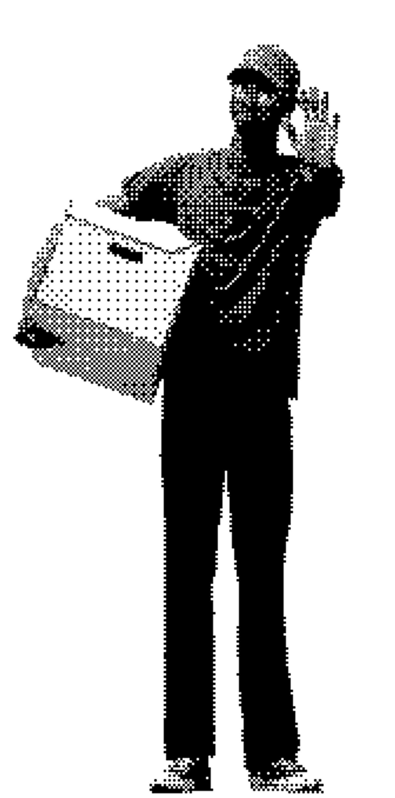
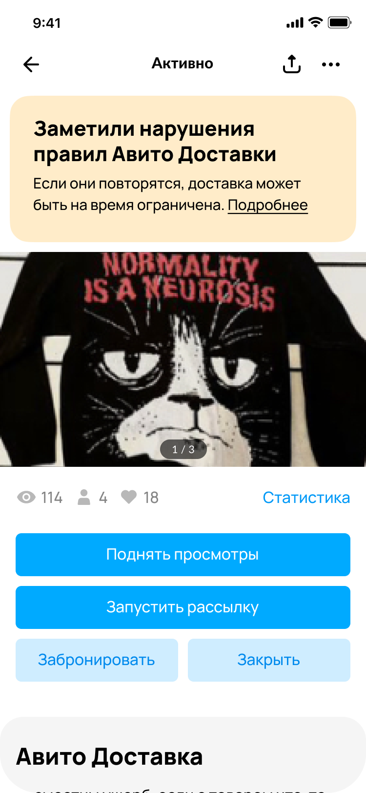

Противодействие абьюзу Авито доставки
Абьюз доставки — нежелательное поведение продавцов, направленное на обход Авито доставки или искусственное снижение костов, связанных с Авито Доставкой
Проблемы
- Из-за нежелательного поведения продавцов за 2024 году
Lost GMV Авито Доставки составил в среднем 3,43% - Продавцы получают сервис, но не платят за него
- Покупатели не получают сервис в полном объеме
Как продавцы обходят доставку
- Пытаются отправить товар напрямую через службу доставки
- Снижают цену товара, чтобы снизить косты
- Уводят на другое объявление, чтобы не платить комиссию по тарифу
- И другие способы, о которых мы еще не знаем
Наша цель — перевоспитать абьюзера, чтобы он остался на платформе и стал проводить сделки по правилам
Мы проверяли постепенно через какой уровень воздействия
мы можем повлиять на продавцов, поэтому выстраивали систему и экспериментировали таким образом:

Селлеры должны понимать, о каких нарушениях идёт речь
Нам важно было подсветить, что правила Авито Доставки существуют.
До запуска провели UX-тест, чтобы убедиться, понятна ли структура и содержание лендинга и доработали его после исследования.
Через 3 месяца после запуска лендинга замерили awareness — опросили 988 уникальных пользователей:
62,6% знают о правилах, но только
28% из них могут назвать ≥ 2 правил
Мы провели эксперимент по продвижению правил
Само по себе промо правил не имело эффекта на количество нарушений.
Для дальнейших экспериментов требовалась посадочная страница с правилами и постоянная точка входа, поэтому мы раскатили лендинг и точку входа в правилах доставки
При попытке получить предоплату на карту предупреждали продавца о возможных последствиях
У нас была гипотеза: если предупредить продавца о последствиях непосредственно перед потенциальным нарушением, часть продавцов откажется от него.
Результаты A/B
A/B +3,1% Leaked GMV reduction
Rollout +10,5% Leaked GMV Reduction
Предупреждали продавца
непосредственно в момент
изменения цены
Если он ранее обсуждал схему про предоплату с покупателем.
Результаты A/B
–6% Price reduction cases
10% оставляли прежнюю цену
Если продавец нарушает — предупреждаем о том, что могут быть санкции за нарушения
Гипотеза: если мы будем напоминать продавцу о последствиях последующих нарушений, он изменит свое поведение
Результаты
–6% Price reduction cases
10% оставляли прежнюю цену

Тестировали 2 вида ограничений для нарушителей
- Отключаем доставку на 7 дней на всех товарах, где была доставка
- а) Ограничения коммуникаций: 3 дня с продавцом можно будет связаться только после оформления заказа, если товар с доставкой
б) С продавцом нельзя 3 дня связаться вообще, если товар с доставкой
Rollout ограничений доставки привел к +1% Leaked GMV Reduction

По результатам всех инициатив команды за год мы смогли перевыполнить годовые цели:
+11,9% Leaked GMV reduction
При годовой цели +6% Leaked GMV reduction
+0,78% Total paid GMV uplift
При годовой цели +0,38% Total paid GMV uplift